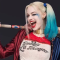
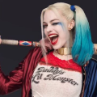

Batman
Bruce Wayne es el único personaje que se identifica como Batman y aparece en Batman, Detective Comics, Batman y Robin, y Batman: The Dark Knight. Dick Grayson vuelve al manto de Nightwing
Ver más 

Harley Quinn
La creación de Harley Quinn fue una idea de último minuto propuesta por el escritor estadounidense Paul Dini para modificar una escena del vigésimo-segundo episodio de Batman: la serie animada
Ver más
Batman
Bruce Wayne es el único personaje que se identifica como Batman y aparece en Batman, Detective Comics, Batman y Robin, y Batman: The Dark Knight. Dick Grayson vuelve al manto de Nightwing
Ver más